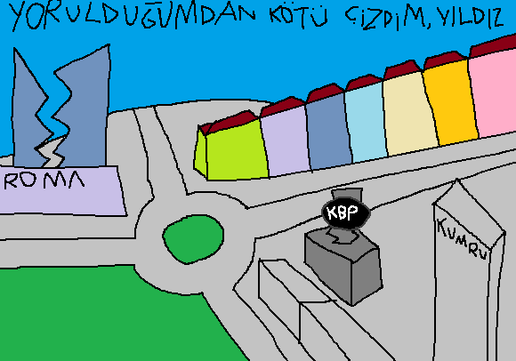

Yıldız, Yıldızevler, Hilal ve Batı Birlik Mahallelerinden oluşan bir semttir. T.C. Muhafız Alayı ve hayalet bina Funda ROMA'ya yakın olduğu için pek fotoğrafı da yoktur. Makul katlı apartmanlarla şehirleşmenin son döneminde inşa edilidiğinden bir sürü boş arsa kalmıştır ve onlara da sonradan gökdelen dikmişlerdir. Ama halk gökdelenlere çok sinir olmuyor çünkü dokuyu bozacak kadar çok yok ve beraberinde AVM getirdiklerinden -hâttâ Funda ROMA ve Nişantaşı Pazarı Çankayaca ünlü- Yıldız küçük çapında bir ticaret merkezi oldu.